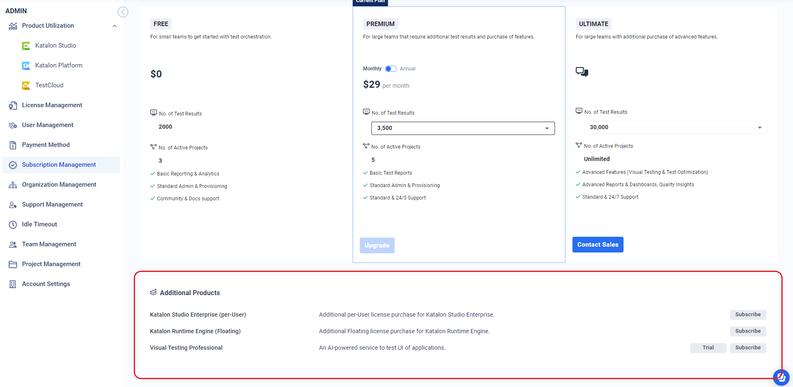

Request a trial Visual Testing ProfessionalTo request a trial, follow these steps:Sign in to Katalon TestOps.Select the desired Account.Click on the Settings icon and select Subscription Management.In the Additional Products section, click on the Trial button of Visual Testing.You then can automatically use a trial VTP for 30 days.